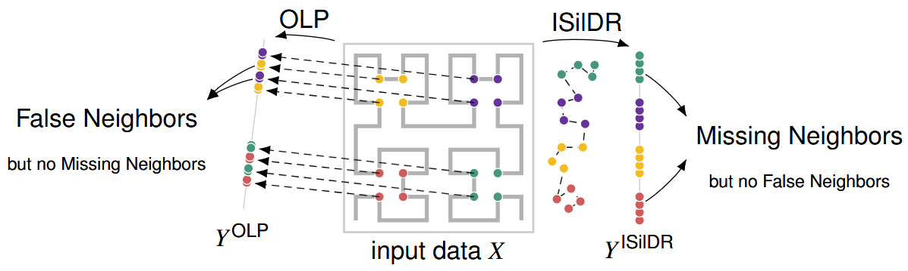

ISilDR: Isometric Seriation-based Dimensionality Reduction for Visual Cluster Analysis

(opens in new tab)
Venue. TVCG (2026)
Materials.
DOI(opens in new tab)
Abstract. Visual cluster analysis is a central task to explore multidimensional data. Dimensionality Reduction (DR) techniques support this task by spatializing multidimensional (MD) data similarities as point patterns in scatterplots. However, unavoidable false and missing neighbor distortions limit their accuracy. For instance, false neighbors make truly separated data clusters appear to overlap in the layout, while missing neighbors split true clusters into falsely separated groups. In general, both types of distortions exist in DR layouts except for orthogonal linear projections (OLP) that only generate false neighbors. In this work, we propose Isometric Seriation-based Dimensionality Reductions (ISilDR) that provably generate at most missing neighbors. We study how ISilDR and OLP together could be leveraged to discover true MD clusters. An ISilDR first creates a seriation of the MD data points, i.e., an ordering along a one-dimensional projection axis, and then each pair of consecutive points along this axis is spaced by their MD distance. An mD ISilDR can be obtained by combining m 1D ISilDRs. We study the theoretical and empirical characteristics of different variants of ISilDRs and OLPs and propose a systematic and formal analysis based on E-neighborhood graphs. From there, we derive rules to discover cluster patterns in MD data from interactive linking of ISilDR and OLP coordinated layouts. We then conduct case studies and illustrate scenarios for trustworthy visual cluster analysis using a combination of ISilDR and other classical DR techniques.
Link to this page: